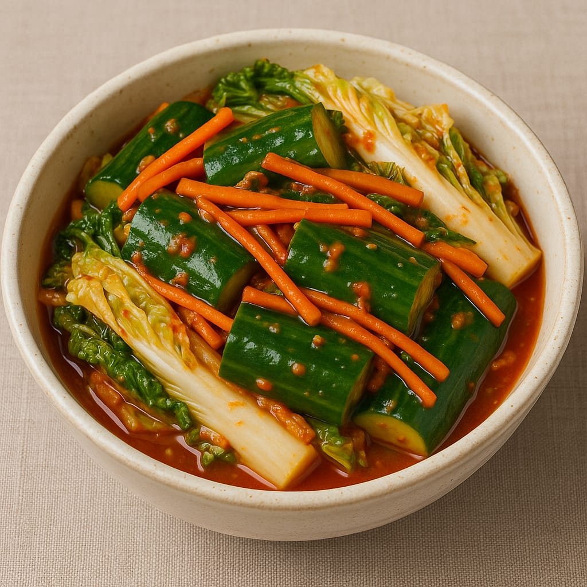
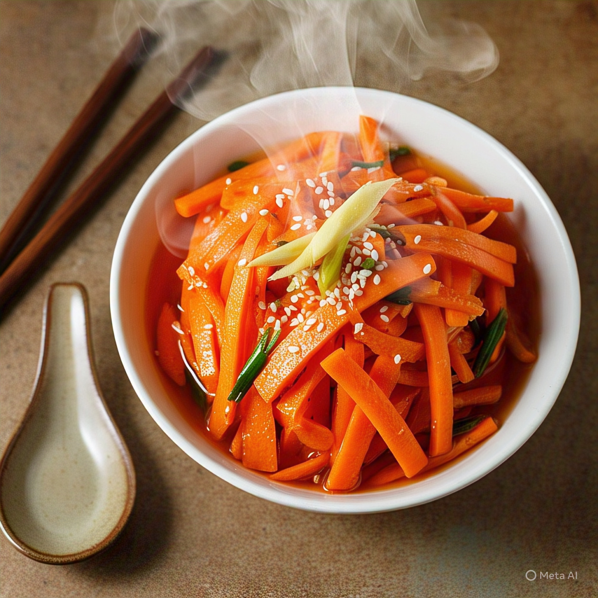
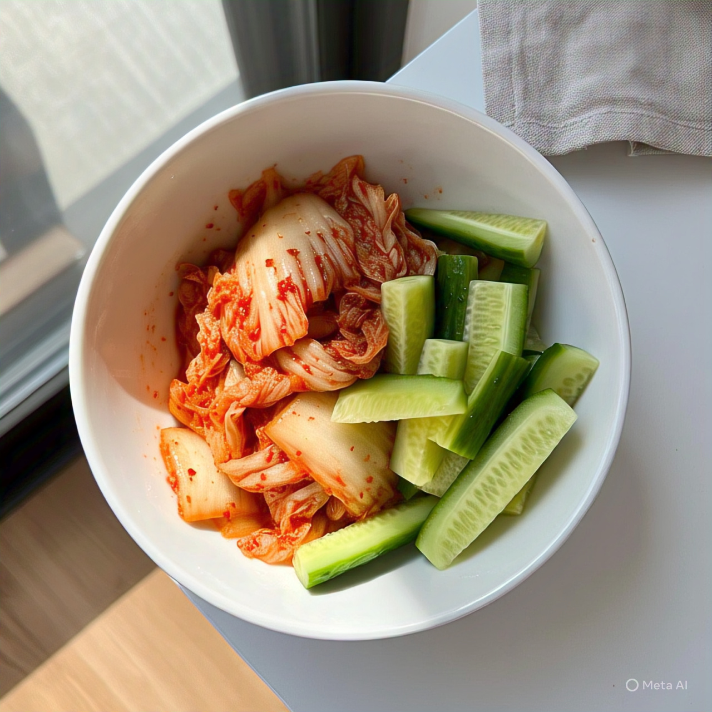
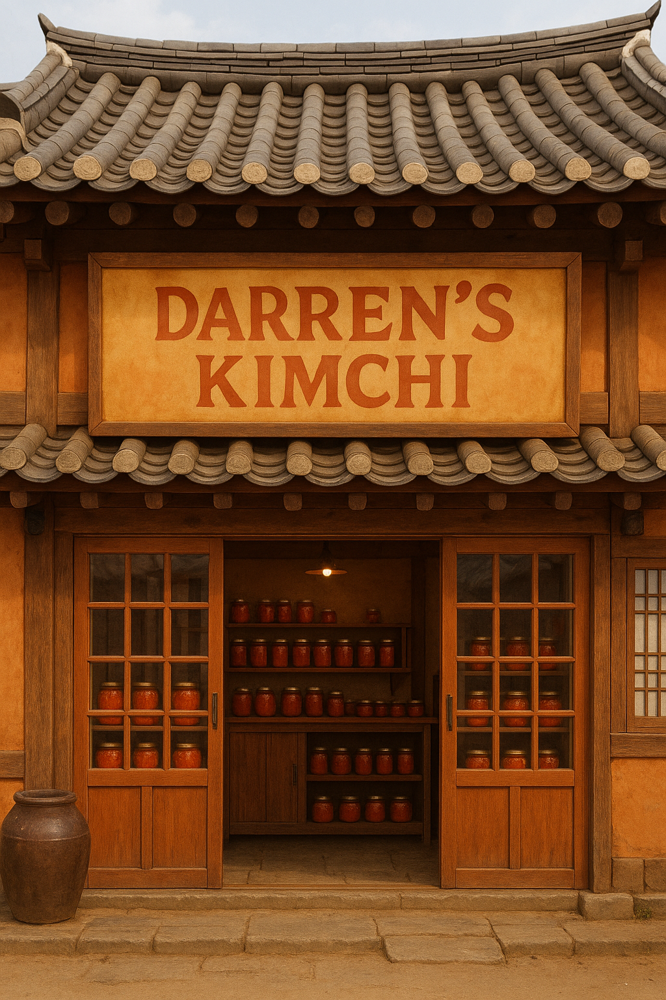

Darren's Kimchi, toko kimchi terbaru. Tempat berbelanja terpercaya, barang dengan kualitas terbaik. Dapat dibeli melalui website ini. Selamat berbelanja!!!!
Kimchi Wortel dan Timun 500gr

Kimchi timun dan wortel ini dibuat menggunakan bahan dasar dari timun dan wortel namun tetap terdapat sawi putih sebagai pelengkap dari kimchi tersebut.
Rp30.000
Kimchi Wortel 500gr

Kimchi wortel ini dibuat menggunakan bahan dasar wortel namun tidak menggunakan sawi putih sebagai pelengkapnya.
Rp22.500
Kimchi Timun 500gr

Kimchi timun ini dibuat mengguanakan bahan dasar timun dan masih terdapat sawi putih sebagai pelengkap kimchi tersebut
Rp 27.000
Kimchi Wortel dan Timun 750gr
Kimchi timun dan wortel ini dibuat menggunakan bahan dasar dari timun dan wortel namun tetap terdapat sawi putih sebagai pelengkap dari kimchi tersebut.
Rp 37.500
Kimchi Wortel 750gr
Kimchi wortel ini dibuat menggunakan bahan dasar wortel namun tidak menggunakan sawi putih sebagai pelengkapnya.
Rp 30.000
Kimchi Timun 750gr
Kimchi timun ini dibuat mengguanakan bahan dasar timun dan masih terdapat sawi putih sebagai pelengkap kimchi tersebut
Rp 30.000

Darren's Kimchi, 123 Oshinawa Korea
08122228888
@darren_kimchi
www.Darren's Kimchi.com